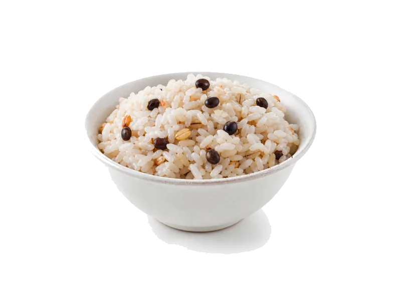

Zboża i kasze
Ryż jałowcowy (suchy)
Ryż jałowcowy (suchy): 7 g białka, 360 kcal, 78 g węglowodanów i 2 g tłuszczu na 100 g. Kategoria: Zboża i kasze.
Kalorie360 kcalna 100 g
Białko / proteiny7 g
Węglowodany78 g
Tłuszcz2 g
Cena (szac.)~0,81 złza 100 g
Ceny zaktualizowano: maj 2026 (szacunek — ceny w popularnych supermarketach)
Porcja: porcja (80g)
| Kalorie | 288 kcal |
|---|---|
| Białko | 5.6 g |
| Węglowodany | 62.4 g |
| Tłuszcz | 1.6 g |
| Cena (szac.) | ~0,65 zł |
Szczegółowe składniki odżywcze na 100 g
| Wartość energetyczna (kalorie) | 360 kcal |
|---|---|
| Białko (proteiny) | 7 g |
| Węglowodany | 78 g |
| Tłuszcz | 2 g |
| Tłuszcze nasycone | 0.4 g |
| Tłuszcze nienasycone | 1.6 g |
| Witaminy i minerały (skrót) | Mangan, Selen, Miedź |
| Współczynnik kcal / 1 g białka | 51.4 |
| Cena produktu (szac. za 100 g) | ~0,81 zł |
| Cena za 100 g białka (szac.) | ~11,61 zł |
Witaminy i minerały na 100 g
Ilość w 100 g produktu oraz orientacyjny % dziennego zapotrzebowania (RDA) dla dorosłej osoby. Żelazo wg normy dla kobiet; sód jako % limitu. Wartości typowe (USDA / tabele żywieniowe / etykiety) — mogą się różnić między markami.
-
Witamina E 0.5 mg
-
Witamina B1 (tiamina) 0.1 mg
-
Witamina B3 (niacyna) 2 mg
-
Witamina B6 0.15 mg
-
Witamina B9 (foliany) 25 µg
-
Żelazo 1.5 mg
-
Magnez 44 mg
-
Fosfor 83 mg
-
Potas 150 mg
-
Cynk 0.7 mg
-
Selen 10 µg
-
Miedź 150 µg
-
Mangan 1 mg
-
Sód 5 mg